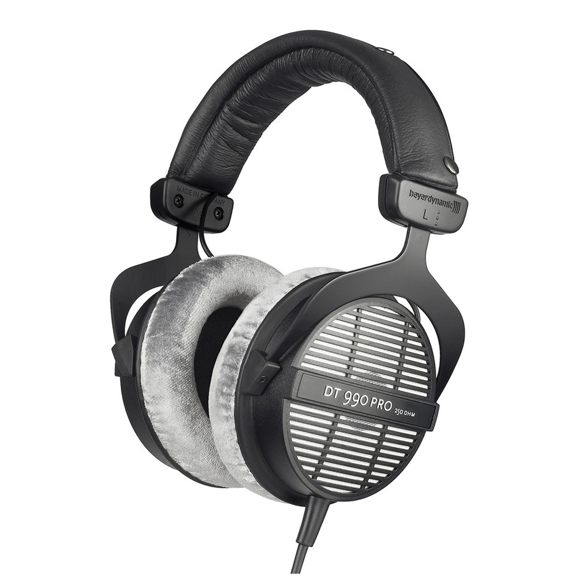
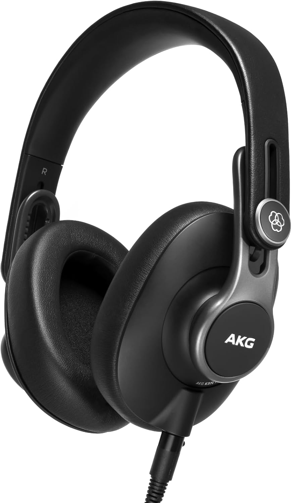

Mejores Auriculares de Estudio para Mezcla y Monitoreo (2026)

Unos buenos auriculares son imprescindibles. Ya sea que estés mezclando a las 2 AM, grabando en una habitación menos que perfecta, o necesites una segunda referencia para tu mezcla, necesitas auriculares en los que confiar. Aquí están los cuatro pares que más he usado a lo largo de mi carrera, con pros y contras honestos de cada uno.
Mejor Cerrado: Beyerdynamic DT 770 Pro
El DT 770 Pro es el estándar de oro para monitoreo cerrado. Los uso para grabar voces — el diseño cerrado previene el sangrado hacia el micrófono. La versión de 250 Ohm tiene una recuperación de detalle increíble, y las almohadillas de velour son cómodas durante horas. Los agudos son ligeramente presentes, lo que ayuda a escuchar problemas de sibilancia antes de que se conviertan en problemas.

Beyerdynamic DT 770 Pro
$159 USD
El estándar de estudio para monitoreo cerrado. Drivers de 250 Ohm, almohadillas de velour y comodidad excepcional para sesiones maratonianas.
Mejor Referencia Abierta: Sennheiser HD 600
Si estás mezclando, necesitas una referencia abierta. Los HD 600 son los auriculares más naturales y neutros por menos de $1,000. Sin graves exagerados, sin agudos artificiales — solo verdad. Los he comparado con auriculares de $3,000 y los HD 600 se mantienen firmes. Revelan cómo suena realmente tu mezcla, y eso es exactamente lo que quieres al tomar decisiones.

Sennheiser HD 600
$399 USD
Auriculares de referencia abiertos audiófilos. Sonido natural y neutro con detalle increíble. La elección del ingeniero de mezcla para escucha crítica.
Mejor Todo-Terreno: Audio-Technica ATH-M50x
Los ATH-M50x son los auriculares de estudio más populares del mundo, y por buenas razones. Funcionan para grabación, mezcla y escucha casual. Los graves están ligeramente reforzados, lo que los hace divertidos de escuchar, pero ten cuidado — podrías subestimar los graves en otros sistemas. Los recomiendo para principiantes porque son versátiles, plegables y construidos para durar.

Audio-Technica ATH-M50x
$169 USD
Los auriculares de estudio más populares del mundo. Claridad aclamada por la crítica, graves profundos y diseño plegable para portabilidad.
Mejor Económico: Sony MDR-7506
Los MDR-7506 han estado en todas partes desde 1991 — camiones de transmisión, sets de filmación, estudios de podcast. Cuestan $99, se pliegan planos y suenan notablemente bien. Los medios son frontales, lo que hace que las voces destaquen, y son brutalmente honestos sobre los defectos.

Sony MDR-7506
$99 USD
El estándar de transmisión desde 1991. Cerrados, plegables e increíblemente confiables. Usados por profesionales en todo el mundo.
Precisión Abierta: Beyerdynamic DT 990 Pro
El DT 990 Pro es el hermano abierto del legendario DT 770 Pro. Donde el DT 770 aísla para grabación, el DT 990 se abre para mezcla — el escenario sonoro expansivo te permite colocar cada instrumento en espacio tridimensional. Los agudos son más presentes que en el DT 770, dándote precisión quirúrgica en colas de reverb, sibilancia y detalles de alta frecuencia. Las almohadillas de velour y el diseño ligero los hacen cómodos para sesiones de mezcla maratonianas. A $169, son el compañero analítico que todo ingeniero de mezcla necesita junto a auriculares cerrados.

Beyerdynamic DT 990 Pro
$169 USD
Auriculares de mezcla abiertos con legendaria extensión de graves. El escenario sonoro espacioso revela colas de reverb y colocación estéreo con precisión quirúrgica. El hermano abierto del DT 770.
El Estándar Harman: AKG K371
El AKG K371 está sintonizado a la curva objetivo Harman — el estándar de oro científico para respuesta de frecuencia en auriculares. Esto significa que suenan naturales, balanceados y se traducen con precisión a altavoces. El diseño cerrado con excelente aislamiento los hace adecuados tanto para grabación como para mezcla móvil. Cables desmontables (3 incluidos — en espiral, corto y largo) significan resistencia para la carretera. Diseño plegable que cabe en una mochila de portátil. A $155, son los auriculares cerrados más precisos por menos de $200 por un margen significativo.

AKG K371
$155 USD
Sintonizado al objetivo Harman para el sonido cerrado más natural por menos de $200. Diseño plegable, cables desmontables y la respuesta de frecuencia más plana en su clase.
Veredicto:
DT 770 Pro para versatilidad, HD 600 para mezcla
Conclusión
¿Necesitas un par para todo? Consigue los DT 770 Pro. ¿Solo mezcla? HD 600. ¿Empezando? ATH-M50x. ¿Presupuesto? MDR-7506. Tengo los cuatro y uso diferentes según el trabajo. Si solo pudiera quedarme con uno, sería el HD 600 — pero es porque mezclo más de lo que grabo.